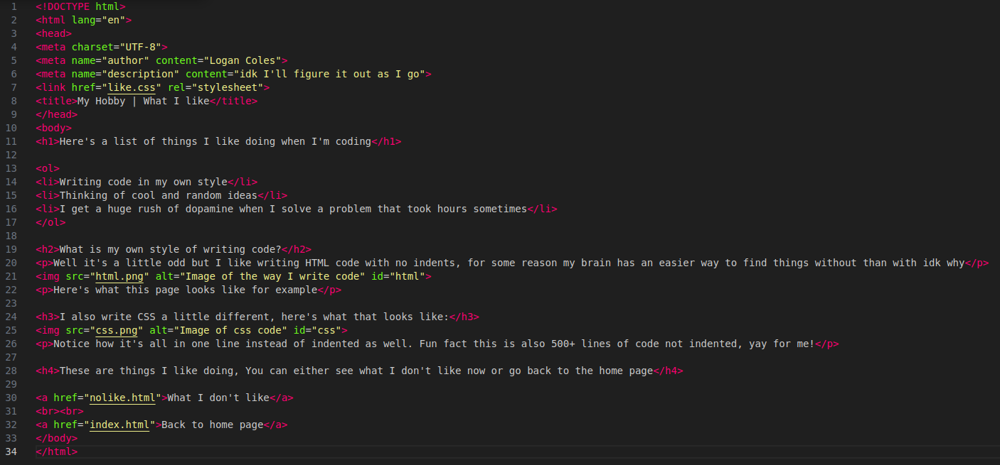
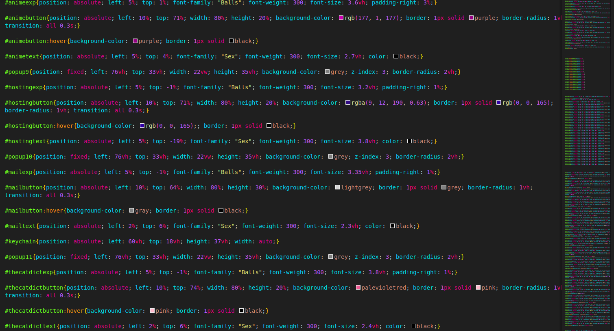

Here's a list of things I like doing when I'm coding
- Writing code in my own style
- Thinking of cool and random ideas
- I get a huge rush of dopamine when I solve a problem that took hours sometimes
What is my own style of writing code?
Well it's a little odd but I like writing HTML code with no indents, for some reason my brain has an easier way to find things without than with idk why

Here's what this page looks like for example
I also write CSS a little different, here's what that looks like:

Notice how it's all in one line instead of indented as well. Fun fact this is also 500+ lines of code not indented, yay for me!
These are things I like doing, You can either see what I don't like now or go back to the home page
What I don't like
Back to home page